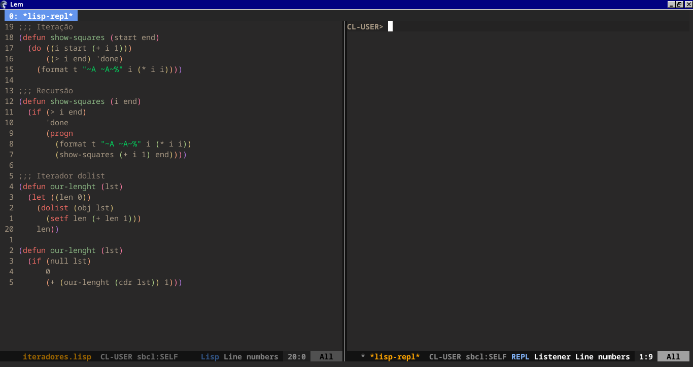
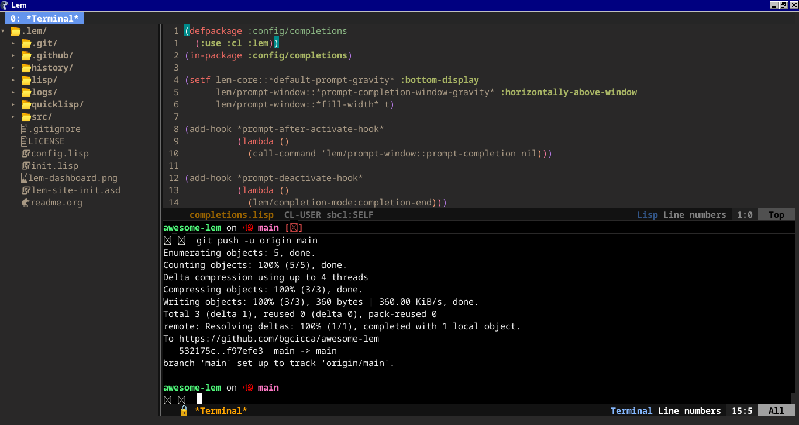

Lem, the Editor of the Future?
I’ve been exploring Common Lisp projects to sharpen my coding workflow when I stumbled upon Lem—a take on the classic editor concept. Lem combines the best of both Emacs and Vim: it offers familiar editing while improve some of the traditional emacs pain points, like sluggish startup times and the bloated of Emacs Lisp (elisp was a very good language when Stallman designed it and today it is still “good enough”. But this begs the question: “Why not Common Lisp?” but Emacs users are notoriously conservative about these things. Just consider the fury that a small change to how registers work has sparked – see this Reddit post and the Emacs-devel thread about it starting here. Aslo as we know, RMS isn’t a fan of common lisp, but there’s more to it than that. When Emacs was being developed, a final specification was still 10 years away and there was no (or at least no “free”) implementation available, so RMS released its own.). Instead, Lem is configured in Common Lisp, making it a multithreaded and very easy to customize alternative.
What really caught my eye is the thoughtful integration of features that all developers crave. Like an editor that not only supports extreming programming in languages such as C, Scheme, Go, Rust, and many more, but also provides a suite of built-in conveniences: terminal integration, multiple cursors, interactive grep, directory mode, tabs, keyboard macros, and even a Git interface magit based. There’s also a fucking built-in game, and robust support for a variety of formats—from Markdown-mode with a web preview and ASCII to JSON, HTML, SQL, and etc… It’s a comprehensive tool that reimagines what an editor should be, and it just makes me think about how Common Lisp is a perfect language for an extensible editor like lem.
Getting Started: Installing Lem
Before you dive in, ensure your system is equipped with SBCL and the necessary SDL2 libraries:
Debian-based systems:
sudo apt install sbcl build-essential libsdl2-dev libsdl2-image-dev libsdl2-ttf-devFedora-based systems:
sudo dnf install sbcl SDL2-devel SDL2_image-devel SDL2_ttf-devel sudo dnf group install c-development development-tools
Next, install Qlot, the Common Lisp project manager, with its automatic installer:
curl -L https://qlot.tech/installer | bashTip: For an alternative method, check out https://github.com/fukamachi/qlot#installation.
Installation: Create a directory for your Common Lisp projects, clone the Lem repository, and build the editor:
mkdir -p $HOME/common-lisp
cd $HOME/common-lisp
git clone https://github.com/lem-project/lem.git
cd lem && make sdl2(If you prefer, run `make sdl2-ncurses` to build both SDL2 and ncurses interfaces. At startup, simply choose your preferred interface using the `-i` or `–interface` option.) Finally, add Lem to your PATH by appending this line to your ~/.bashrc:
export PATH="$HOME/common-lisp/lem:$PATH"
Above is an image of micros, the fork of slime that was readapted especially for lem.

Despite all its strengths, there’s one feature that would make my full migration to Lem complete: native Org mode support. I rely on Org mode for nearly everything—even my blog posts—and without it, I’m still partially anchored to Emacs. Nonetheless, for all my coding needs, Lem has proven to be an exceptional editor.
Wrapping Up
Lem isn’t just another text editor—it’s a rethinking of how editors can be both powerful and streamlined. If you’re looking to enhance your workflow and development experience, it’s definitely worth a try. And if you’d rather skip the initial setup, I’ve prepared a config distribution (in the spirit of Doom Emacs and Spacemacs) made for Lem. You can explore it here: oh-my-lem.
Disclaimer: This is a personal opinion, and the author has no affiliation with Lem or RMS.
Happy coding!
See aslo